BIMM Lab studies fluid-filled, bio-inspired composite materials — where a liquid-saturated porous or cellular core does structural, thermal, and protective work at once, the way biological tissue does. Our research spans material characterization, novel test method development, and applications in space habitat protection, radiation shielding, and thermal management for spacecraft.
Fluid-Filled Cellular & Sandwich Composites
The lab’s core material system is a composite that carries fluid the way biological tissue does — through a porous or cellular core saturated with liquid, sandwiched or bonded between structural skins. We characterize how fluid content changes stiffness, damping, impact resistance, and failure behavior compared to the same structure dry. This spans open-cell foam cores (Hutt, M.S. 2025) and fiber-reinforced sandwich panels with a fluid-filled porous core inspired by human cortical bone (Maestas, Ph.D. 2026). Because these materials are novel, part of the lab’s contribution has been developing new test methods for them — including the Biaxial Clamped Plate Flexure Test, a technique developed at BIMM Lab and currently under consideration for adoption by ASTM.
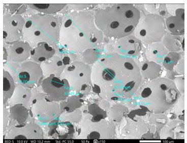
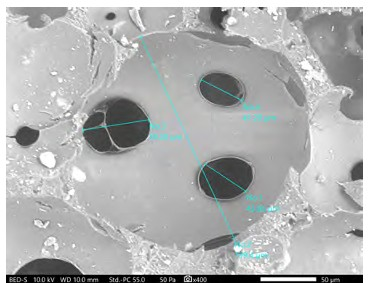
Radiation Shielding & Space Habitat Protection
Fluid-filled composites double as radiation attenuation layers without the mass penalty of adding separate shielding structure. This is the throughline connecting the lab’s material science to its aerospace application: the same interstitial fluid that improves impact resistance and blast/acoustic energy attenuation also contributes to passive radiation shielding, making these composites attractive for crewed space habitats and long-duration missions where every kilogram of shielding mass matters.
Biomimetic Heat Pipes & Thermal Management
The lab designs and tests heat pipes with wick structures drawn from biological and geological porous media — trabecular bone, vesicular volcanic pumice — as well as engineered triply periodic minimal surface (TPMS) lattices like the Schwarz Diamond and gyroid. These structures occupy regions of the porosity–permeability design space that conventional sintered or screen wicks can’t reach, which matters because capillary pumping and permeability are fundamentally in tension in a standard wick. This work spans conventional cylindrical heat pipes (Telford, M.S. 2023) and a novel D-shaped, gravity-assisted design with 3D-printed porous wicks (Amevor, M.S. 2026), benchmarked against industry-standard copper-mesh references for space radiator applications.
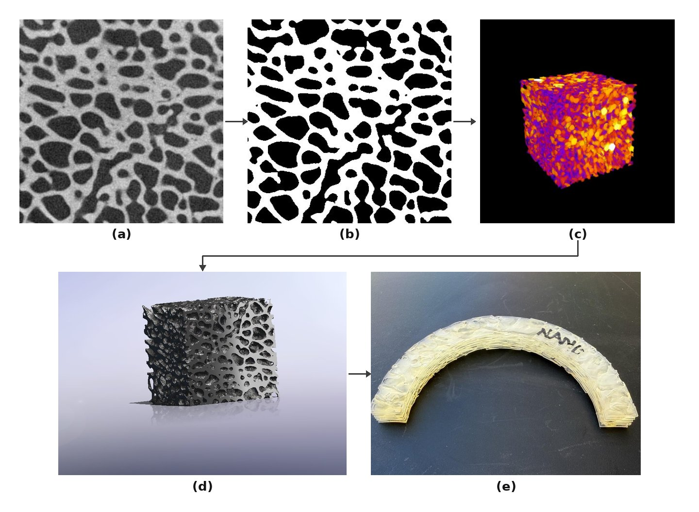
Additive Manufacturing & Fabrication
Much of the lab’s hardware is built in-house. We use both filament (FDM) and resin (SLA/DLP) 3D printing to fabricate wick structures, test specimens, and composite molds, complemented by laser cutting for panel and fixture preparation. Resin printing spans standard, high-temperature, and flexible/elastic formulations, letting a printed part’s thermal and mechanical behavior be matched to its application — from rigid high-temperature wick lattices to flexible gaskets and seals.
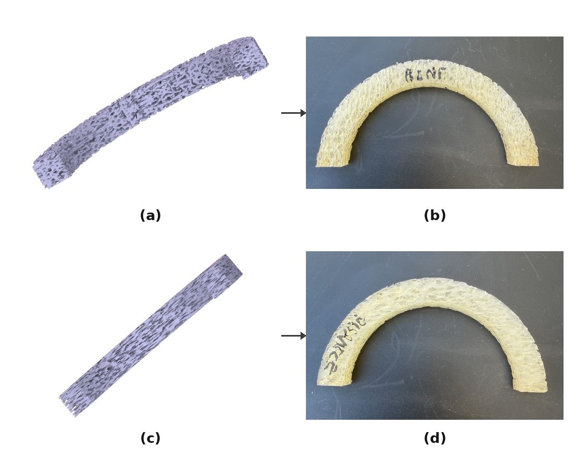
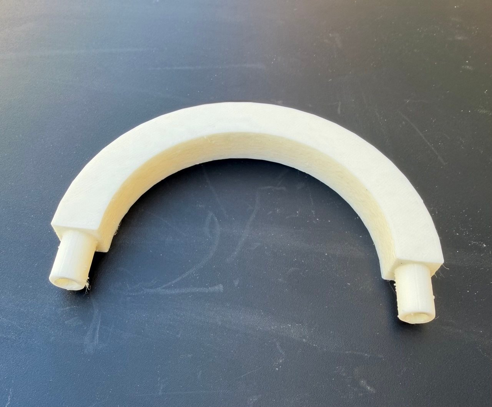
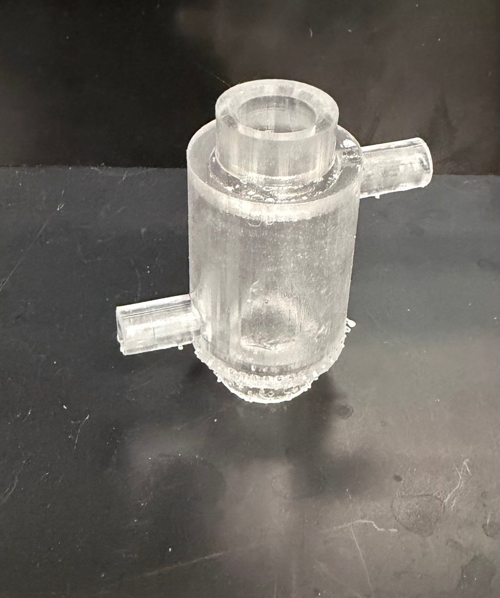
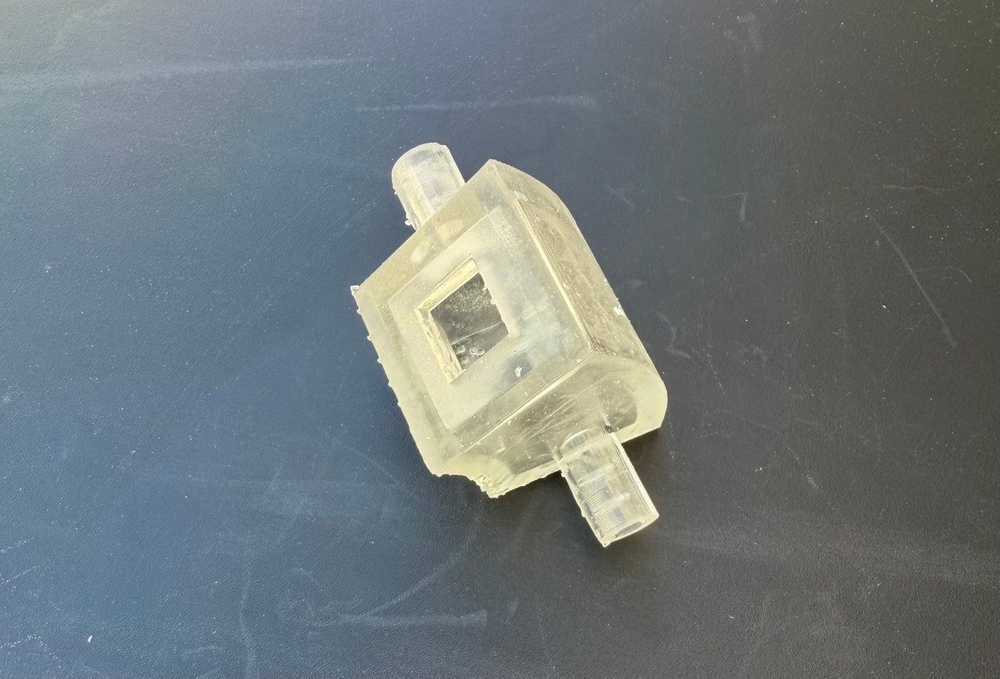
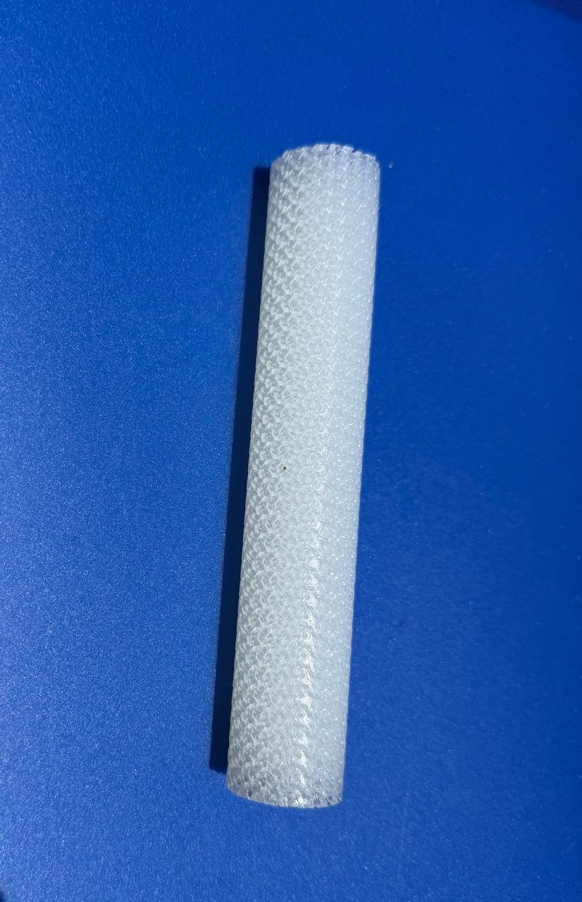
Experimental Methods & Computational Validation
Because these composite and heat pipe systems are novel, standard test methods often don’t exist for them — so developing the test method is part of the research. The lab pairs physical testing (compression, flexure, Darcy permeability, hot-oil-bath thermal testing, SEM pore imaging) with computational validation, including ANSYS finite element analysis, digital image correlation (DIC), lattice Boltzmann method (LBM) pore-scale simulation, finite volume method (CFD) simulation, and hyperelastic material modeling, to confirm that experimental results and models agree before drawing design conclusions.
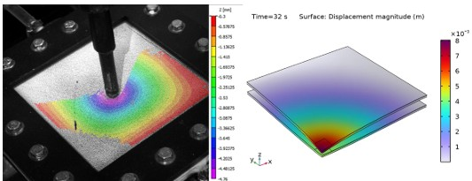
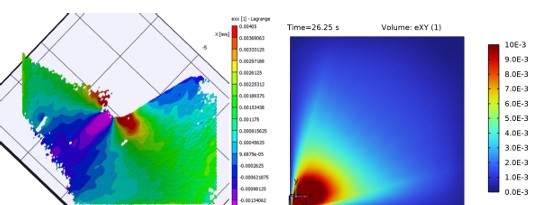
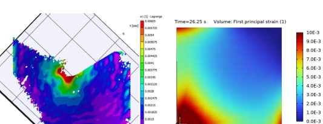
Funding & Collaboration
This research has been supported by NASA’s New Mexico Space Grant Consortium, the National Science Foundation, the Office of Naval Research, the Department of Energy, and other agencies. See the People page for more on the lab’s principal investigator, and the Publications page for related papers and patents.